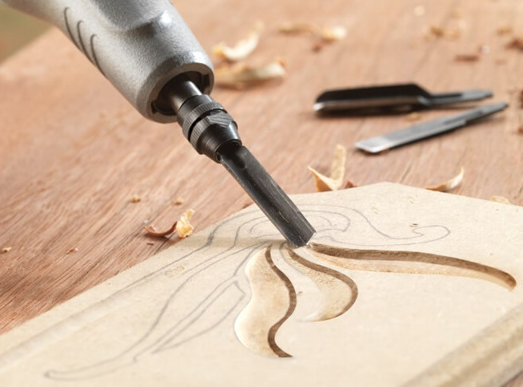
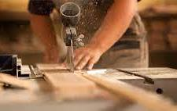
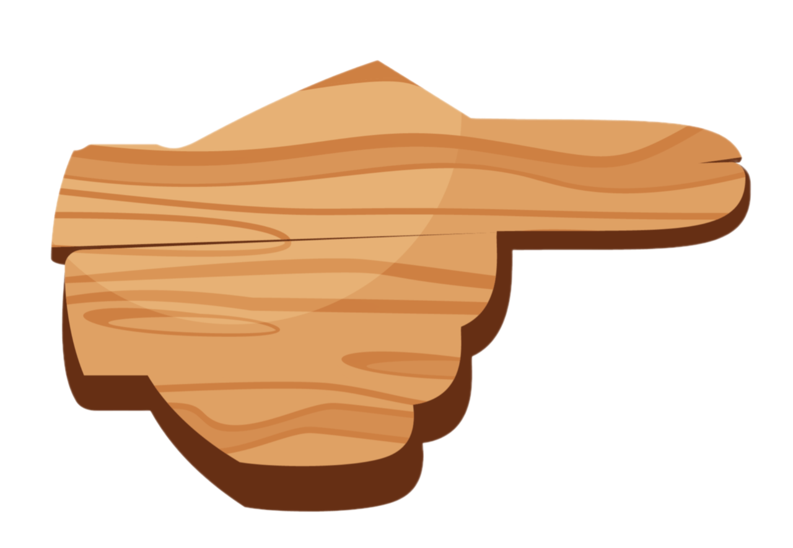

Механические свойства древесины
-
Прочность
Прочность
свойство, определяющее потенциал материала к сопротивлению различным механическим повреждениям и деформациям. Прочность критически важна при проектировании небольших строений, где многие виды пиломатериалов часто применяются для изготовления несущих конструкций и лестниц. Прочность древесины измеряется при помощи разных типов механических нагрузок, применяемых в различных направлениях. При этом оценивается сопротивление материала изгибу, сжатию и растяжению, а также устойчивость к ударным нагрузкам. -
Упругость

Упругость
определяется способностью материала восстанавливать свою первоначальную форму после деформации, вызванной механическим усилием. Этот параметр важно учитывать во время прогнозирования поведения конструкции при изменении условий нагрузки. Стоит отметить, что характеристики древесины могут меняться в зависимости от направления приложения усилия, из-за чего упругость наиболее сильно проявляется при воздействии, направленном перпендикулярно волокнам. -
Твердость
Твердость
является одним из важнейших факторов, определяющих метод обработки конкретного вида материала. Этот параметр влияет на устойчивость древесины к износу, царапинам или иным видам повреждения поверхности материала. Древесина с высокой твердостью предпочтительна при изготовлении напольных покрытий или мебели. Для измерения этого параметра используют специальные тесты с внедрением в материал инденторов шарообразной или конической формы.

Понимание и правильное применение механических свойств древесины позволяют специалистам полностью использовать потенциал этого материала.
От грамотного выбора древесины нередко зависят не только долговечность и надежность конструкции, но и безопасность ее эксплуатации.